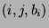
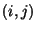
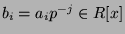
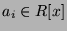
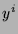
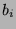
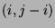

Usage
points N
Signature
points: % List Cross(Integer, Integer, Rx)
| Parameter | Type | Description |
|---|---|---|
| N | % | a Newton polygon |
Description
Returns a list of triples  with increasing i, where  describes all the points of the lower enveloppe of N and  where  is the coefficient of the original polynomial in . For a polygon above infinity,  is the leading coefficient of.
Remarks
When Rxy is a LinearOrdinaryDifferentialOperatorCategory over Rx, then each point in the algebraic Newton polygon corresponds to the point  in the differential Newton polygon.
See Also
slopes